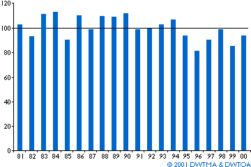

Seasonal Variation in Wind Energy


Wind
Matches Seasonal Electricity Consumption Patterns
In temperate zones summer winds are generally weak compared to
winter winds. Electricity consumption is generally higher in
winter than in summer in these regions.
 In the cooler areas of the globe, electrical
heating is therefore ideal in combination with wind energy, because
the cooling of houses varies with the wind speed much like the
electricity production of wind turbines vary with wind speeds.
In the cooler areas of the globe, electrical
heating is therefore ideal in combination with wind energy, because
the cooling of houses varies with the wind speed much like the
electricity production of wind turbines vary with wind speeds.
 In electricity systems that are not
based on hydropower and wind there may be good reasons to avoid
electrical heating, however:
In electricity systems that are not
based on hydropower and wind there may be good reasons to avoid
electrical heating, however:
 Conventional power plant wastes a lot of
heat, and thus fuel (at least 60%), i.e. for every unit of useful
heat consumed by a household, the power station will waste 1.5
units of heat (and fuel).
Conventional power plant wastes a lot of
heat, and thus fuel (at least 60%), i.e. for every unit of useful
heat consumed by a household, the power station will waste 1.5
units of heat (and fuel).
Annual Variation in Wind Energy

Just like harvest yields vary from year to year in agriculture, you will find that wind patters may vary from year to year. Typically, the variations are less than the changes in agricultural production. In the case of Denmark, you will see that output from wind turbines typically have a variation (a standard deviation) of some 9 to 10 per cent. You may see the monthly and yearly variations in Denmark during more than 20 years on the web site Vindstyrke.
© Copyright 2000 Soren Krohn. All rights reserved.
Updated 14 February 2001
http://www.windpower.org/tour/grid/season.htm